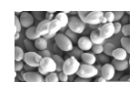
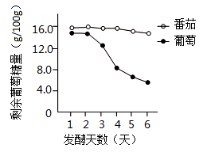
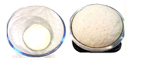
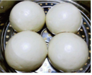

2023年北京中考生物 第26题26. 在学校开展的实践活动中，小林尝试利用天然酵母菌发面，制作馒头。他的实践记录单如下，请将该记录补充完整。实践记录单实践目的 酵母菌属于______（填“细菌”或“真菌”），在自然界分布广泛。我想利用水果表面的天然酵母菌制作果味馒头。菌种选择 将葡萄和番茄表皮上的酵母菌分别与葡萄糖溶液混合，检测它们的发酵能力，结果如图。因为葡萄组______，我选择用葡萄表皮上的酵母菌来发面。馒头制作 和面时要用温水，如果用开水，会使酵母菌______，影响后续发面过程。我尝试在23℃、28℃和33℃条件下发面，由于酵母菌发酵产生了______（填气体名称），面团膨大至原来的1.4、1.7和1.8倍。经过蒸制过程，馒头制作完成。品鉴与反思 邀请同学们品尝我的劳动成果，并进行评价，结果如下表。温度（℃）感官评价（各项满分均为10分）松软度风味外观色泽238.48.5788.3289.29.38.68.7339.0928.58.9结合面团膨大情况和评价结果，我认为最适宜的发面温度为28℃，你同意吗？请写出你的一条理由。______除了温度外，在原料或制作步骤方面可能会影响馒头品质的因素还有______，我将进一步开展实践探究。